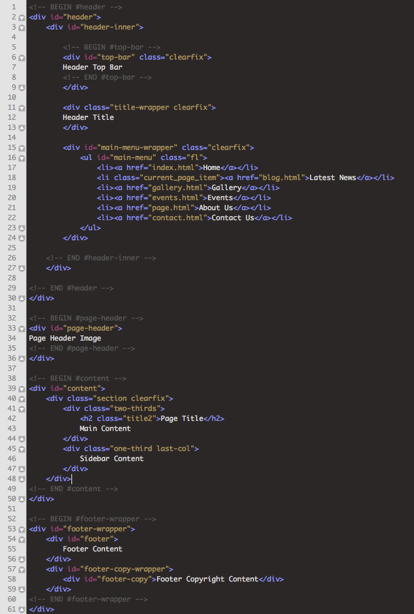

Created: 07/06/2012
By: Quite Nice Stuff
Email: help@quitenicestuff.com
Thank you for purchasing my theme. If you have any questions that are beyond the scope of this help file, please feel free to email via my user page contact form here. Thanks so much!
This theme is a fixed layout with two columns. The main content area has the class "two-thirds" (two thirds of the page area) and the sidebar area has the class "one-third" (one third of the page area).
There are 2 primary fonts used in this template "Bitter" for titles and "Arial" for paragraph text. If you want to change them go to lines 96, 455 and 459 in the "style.css" file. Note the "Bitter" font is a Google font, if you want to change to a different Google font don't forget to import it in the HTML head tags (see line 21 of any HTML file in this package)
There is one main CSS file which is stored in the root directory named "style.css", this contains all the main CSS code. There are 5 other CSS files used for the separate colour schemes which are stored in "css/colour".
The main CSS file "style.css" is fairly well documented in the file, the basic structure is like this:
0.0 - Reset 1.0 - Global 2.0 - Structure 2.1 - Column Structure 2.2 - Breadcrumbs 2.3 - Pagination 3.0 - Header 3.1 - Donate Button 4.0 - Main Menu 5.0 Typography 5.1 - Lists 5.2 - Titles 5.3 - Alerts & Messages 5.4 - Buttons 5.5 - Other 6.0 - JS Elements 6.1 - Accordion 6.2 - Toggle 6.3 - Tabs 6.4 - Google Map 6.5 - Slideshow 7.0 - Tables 8.0 - Forms 9.0 - Social Icons 10.0 - Blog 10.1 - Blog Homepage Preview 11.0 - Events 11.1 - Events Homepage Preview 12.0 - Photo Gallery 13.0 - Comments 14.0 - Widgets Structure 14.1 - Sidebar Widgets 14.2 - Footer Widgets 14.3 - Flickr Widget 15.0 - Footer 15.1 - Footer Sponsors 16.0 - IE Fixes
This theme imports 7 Javascript files.
I've used the following images, icons or other files as listed.
Once again, thank you so much for purchasing this theme. As I said at the beginning, I'd be glad to help you if you have any questions relating to this theme. No guarantees, but I'll do my best to assist. If you have a more general question relating to the themes on ThemeForest, you might consider visiting the forums and asking your question in the "Item Discussion" section.
Your Name